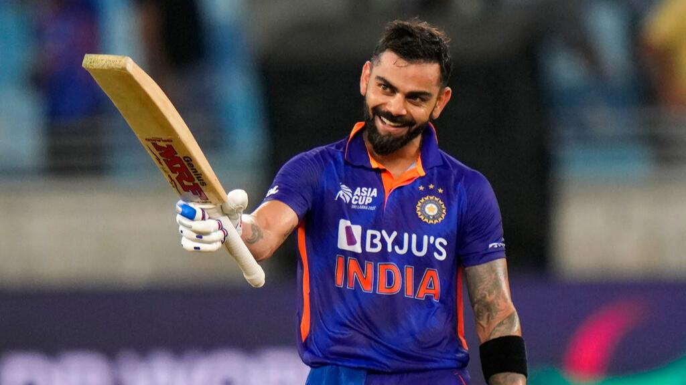

Virat Kohli
My Idol whom I would like to meet in person

Self-Beleif and Hard Work will always earn you Success
- 1988 - Born in New Delhi, India
- 2006 - At the age of 18 his father died, on the very next day he stepped on the field and played an inning of 96* runs and saved his team from Fall-On
- 2012 - Honored with "ICC ODI Player of the Year"
- 2013 - Honored with "Arjuna Award" by The President "Shree Pranab Mukharjee"
- 2016 - Captain of "ICC ODI & ICC TEST Team of the Year" and created a record of scoring 973 runs in a single IPL Season
- 2017 - Honored with "Padma Shree Award" by The President "Shree Pranab Mukharjee"
- 2018 - Honored with "Rajiv Gandhi Khel Ratna Award" by The President "Shree Ram Nath Kovind"
- More About him